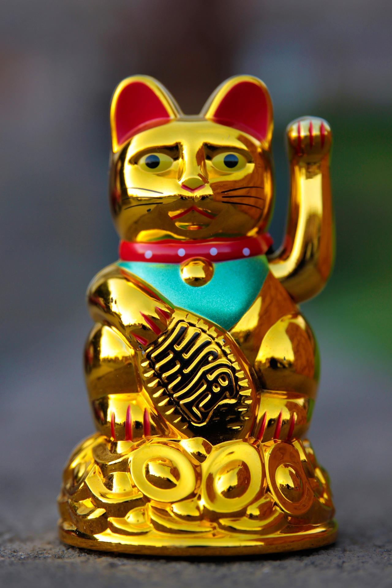

Wusstest du das? - Winkekatze
Es gibt verschiedene Geschichten über die Maneki-neko. Eine davon handelt von Samurai, die dan Tempel von Gotoku-ji aufsuchten. Als sie ankamen sass am Eingang eine Katze, die mit ihrem Pfötchen über sein Ohr strich und so aussah als winke sie den Samurai zu.
Heutzutage gehen Katzenbesitzer immer noch dorthin, wenn sie ihre Kätzchen verlieren. Die Besitzer begraben dort die Asche ihrer Kätzchen.
